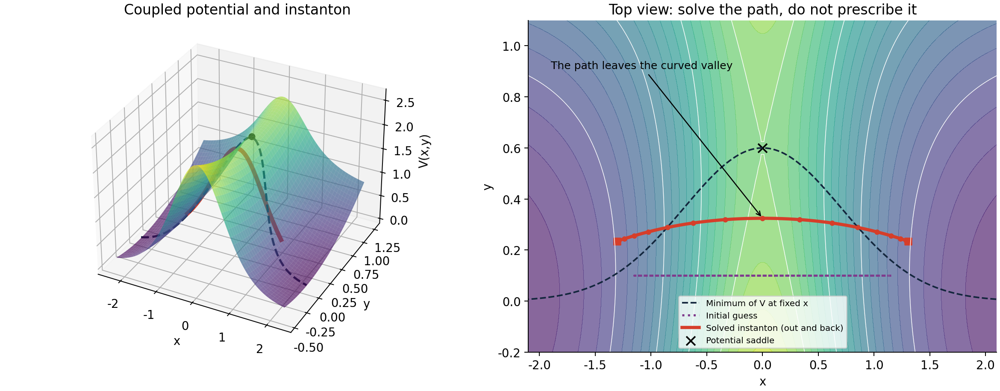
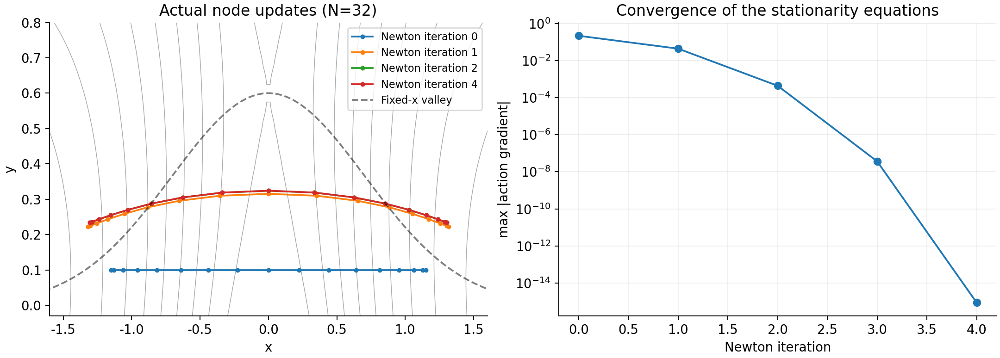

Chemical Reaction Computation - Part VII
Multidimensional Instantons: A Coupled 2D Calculation
In one dimension, an instanton rate can be obtained by finding one important energy and estimating the width of its contribution. In a molecule, the same energy can support many different arrangements of moving atoms. Which collective displacement matters, and how does a computer actually find it?
Rather than introduce another abstract picture, we will solve one coupled two-dimensional model from beginning to end. We will start with a potential and a temperature, move a set of initially misplaced nodes until they satisfy the stationary equations, and turn the resulting path into a thermal flux. The path, its turning points, and its energy will all be outputs.
Part V already derived the dominant-energy approximation and explained why a peak needs a width. Part VI addressed its crossover boundary. Here we return to ordinary instanton theory well below that boundary. The new work is the multidimensional solver and its transverse fluctuations, not another derivation of WKB or the Boltzmann path integral. Historically, this is the nonseparable-rate question already central to Miller's 1975 formulation, made concrete through a discretized path calculation.
1. A potential that cannot be split into two independent problems
Use dimensionless units \(\hbar=m_x=m_y=k_B=1\). The reaction connects the negative- and positive-\(x\) scattering channels. At each fixed \(x\), the potential is lowest at \(y=g(x)\): a curved valley. Moving in \(x\) changes the preferred transverse position, and moving in \(y\) changes the force along \(x\). No analytic instanton path or action is used for this coupled model.
The potential itself has a simple formula; its periodic orbit does not follow by substituting into the earlier one-dimensional Eckart answer. Even the coordinate change \(z=y-g(x)\) does not separate the Hamiltonian: the kinetic energy becomes \([\dot x^2+(\dot z+g'\dot x)^2]/2\), which couples the new coordinates.
Thus \(\omega_b=2\), \(T_c=1/\pi\), and our chosen \(T=1/(2\pi)=T_c/2\) fixes the imaginary-time period \(\tau=\beta\hbar=2\pi\). Temperature specifies the period, not the unknown turning-point positions.

2. Keep the rate in sight
The calculation still targets \(\mathcal F=kQ_R\), with the reactant normalization stated below. For this two-coordinate model, ordinary instanton theory gives
There are three jobs: compute the stationary action \(S_*\); obtain the longitudinal width from its variation with period; calculate the transverse fluctuation factor \(Z_{\rm inst}\). A path alone supplies only the first. The standard expression and stability-parameter form are stated in Lawrence's equations (4)–(5); we use the ordinary formula reviewed there, not the all-temperature construction.
Recall the imaginary-time action from Part V:
Here \(s\) labels imaginary time; it is not a measured reaction duration. The stationary condition is \(-\ddot{\mathbf q}+\nabla V=0\), or auxiliary motion on the inverted potential. We seek the noncollapsed, time-reversal-symmetric orbit that traverses the forbidden region and returns. This orbit does not extend to the asymptotic reactant and product channels, and it is not a real-time molecular trajectory.
3. Replace an unknown curve by unknown coordinates
Place \(N\) nodes at equal imaginary-time intervals \(\Delta s=\tau/N\), with \(\mathbf q_N=\mathbf q_0\). The path-integral introduction explains the origin of the spring-linked discretization. Here we use it to solve a saddle, not to sample an equilibrium distribution:
There are initially \(2N\) unknown coordinates. Neither \(y=0\) nor \(y=g(x)\) is imposed. The turning points also move. The first term penalizes rapid displacement between neighboring nodes; the second accounts for potential energy along the entire path. Following a lower but more curved valley can increase the displacement cost.
Each node appears in two neighboring links. Differentiating those links and its potential term gives the equations the program must solve:
In other words, the local potential gradient and the two link gradients must balance at every node simultaneously. Small residual means these equations are satisfied; it does not yet establish a converged continuum path or an accurate quantum rate.
All potential derivatives used by the solver
Write \(d=y-g(x)\) and \(a_x=\operatorname{sech}^2x\). Analytic derivatives of the potential are available even though the orbit is solved numerically:
At the independent test point \((0.7,0.2)\), central finite differences agree with the gradient and Hessian to maximum absolute differences of \(8.8\times10^{-11}\) and \(3.1\times10^{-10}\), respectively. This checks the implementation at that point, not every location on an arbitrary surface.
4. An initial guess is the start of a nonlinear solve
Initialize a geometrical path, without its final energy or an analytic orbit:
It is a horizontal line traced out and back, not a proposed physical mechanism. The task is to correct all its coordinates. Collect the independent coordinates in \(z\). Linearizing the residual at the current iterate gives
The last equation is a linear system, solved with numpy.linalg.solve; the code does not form an explicit inverse. The new path is \(z+\alpha\Delta z\). Recalculate the gradient and Hessian there, and repeat. Thus “guess a path” does not mean repeatedly drawing arbitrary alternatives: each correction is determined by a local linearization of the equations.
In node order, the full action Hessian consists of blocks
Non-neighbor blocks vanish; the first and last nodes are neighbors. The implementation stores all \(x\) coordinates before all \(y\) coordinates, which only changes the matrix ordering. It uses dense linear algebra for this small example; large systems can exploit the sparse structure.
Time origin, negative mode, step control, and stopping
A shift of the imaginary-time origin describes the same continuous orbit and produces a zero mode. For the turning-point-to-turning-point orbit sought here, impose time reflection \(\mathbf q_j=\mathbf q_{N-j}\). The independent half-ring has \(N/2+1\) nodes, each with two free coordinates. This fixes the time origin and uses the orbit's reversal symmetry; it is not a restriction valid for every possible periodic orbit, and it does not freeze transverse motion.
If \(P\) copies the independent half into the full ring, with \(P_{j\ell}=1\) for \(\ell=\min(j,N-j)\), use \(\widetilde P=\operatorname{diag}(P,P)\) in the coordinate ordering above:
This sums both mirrored nodes' contributions rather than simply discarding half the gradient. At \(N=32\), the Newton system has 34 unknowns. After convergence we check the full \(2N\)-coordinate residual and Hessian.
This is a reactive saddle solve, not unrestricted minimization. Keep the negative Hessian direction; replacing negative eigenvalues by their absolute values changes the Newton equation. The full 512-node Hessian has one negative eigenvalue and one near-zero eigenvalue (about \(-1.4\times10^{-13}\)); the remaining modes are positive.
Start a trial step at \(\alpha=\min[1,0.35/\|\Delta z\|_\infty]\). Define \(M(z)=\|G_r(z)\|_2^2/2\) and accept only if
Otherwise halve \(\alpha\), allowing at most 30 trials. We require residual decrease, not action decrease. Stop when the full \(\|G\|_\infty<2\times10^{-11}\), allowing at most 60 Newton iterations. The script also rejects a collapsed solution with an \(x\)-span below 1; that amplitude threshold is specific to this model. A constant path at the potential saddle also solves the stationarity equations, so a small residual alone is insufficient.
5. Watch one node, then the whole path
For \(N=32\), the initial node \(j=8\) is at \((0,0.1)\). Its two neighbors have the same \(y\), so its transverse link gradient vanishes. The potential gradient is \(V_y=0.1-0.6=-0.5\), giving
The node must move, but not directly to \(y=0.6\): that would alter its links to neighbors, whose coordinates must also change. Solving the full reduced linear system gives the first update \(\Delta y_8=0.21532426\). The node moves to \(y_8=0.31532426\), and later updates finish the correction.
| Newton updates | Middle-node \(y\) | Right turning point \((x,y)\) | \(\|G\|_\infty\) |
|---|---|---|---|
| 0 | 0.100000 | (1.150000, 0.100000) | \(2.17\times10^{-1}\) |
| 1 | 0.315324 | (1.318001, 0.222203) | \(4.38\times10^{-2}\) |
| 2 | 0.324006 | (1.305080, 0.233664) | \(4.37\times10^{-4}\) |
| 3 | 0.324102 | (1.304937, 0.233779) | \(3.68\times10^{-8}\) |
| 4 | 0.324102 | (1.304937, 0.233779) | \(8.88\times10^{-16}\) |

Three additional seeds, with amplitude/transverse offset \((1,0)\), \((1.4,0.5)\), and \((1.2,-0.1)\), converge to the same 64-node action. This is a useful branch check, not proof that every competing instanton has been found.
6. The path is found; now calculate its neighborhood
The exponent and the longitudinal width
Substituting the converged coordinates into \(S_N\) gives the exponent. To obtain its period dependence, keep \(N\) fixed and solve new paths at \(\tau\pm h\) and \(\tau\pm2h\), with \(h=0.002\tau\). Each path is reoptimized; changing the time interval while freezing the coordinates would not give the required derivative of the stationary action.
The corresponding first derivative yields \(E_*=\partial S_*/\partial\tau\). Energy is now an output of the orbit family, not an independently guessed input. This is the same longitudinal width as in the one-dimensional energy calculation: the Legendre relation \(S_*=W(E_*)+\tau E_*\), with \(W'(E_*)=-\tau\), gives \(S_*'=E_*\) and \(S_*''=-1/W''(E_*)\). We have changed representation, not added a second selection of the dominant energy.
At 512 nodes, \(S_*=9.49502087\), \(E_*=0.51925015\), and \(-S_*''=0.16578835\). Hence \(e^{-S_*}=7.52254565\times10^{-5}\) and \(\sqrt{-S_*''/(2\pi)}=0.16243779\).
Transverse fluctuations without guessing more paths
Write a nearby path as \(\mathbf q_*+\eta\). The stationary path removes the first-order term, leaving
This specifies how small displacements change the path weight. The required curvature is evaluated along the whole orbit, not just at the potential saddle. A narrow allowed neighborhood and a broad one do not contribute equally even if their central actions match.
The code evaluates this quadratic fluctuation contribution through the equivalent linear stability equations. Linearize the auxiliary orbit equation, \(\delta\ddot{\mathbf q}=V''(\mathbf q_*)\delta\mathbf q\), and propagate the fundamental matrix:
The four columns track the response to four independent initial position/velocity perturbations. Integrating this 4-by-4 matrix once gives the linear response around the orbit; we do not randomly sample a cloud of new paths. The program interpolates the nodes with a periodic cubic spline and integrates using adaptive DOP853 with relative tolerance \(2\times10^{-10}\), absolute tolerance \(2\times10^{-12}\), and maximum step \(\tau/100\).
For this orbit there is one transverse pair of multipliers \(\lambda,\lambda^{-1}\), with \(\lambda>1\), and a longitudinal neutral pair. The transverse Gaussian factor is represented by
The 512-node result is \(u=6.40483343\) and \(Z_{\rm inst}=0.0407311630\). Although \(V_{yy}=1\), the coupled equations have \(V_{xy}\ne0\); replacing the entire calculation by a constant transverse frequency would be incorrect. The longitudinal zero and negative modes are handled by the standard rate expression, not multiplied as ordinary positive Gaussian eigenvalues.
A diagnostic that separates interpolation error from physical instability
On an exact continuous orbit, the two longitudinal multipliers are 1. A spline through discrete stationary nodes is not itself an exact continuous solution. At 512 nodes this pair is \(0.998537\pm0.054069i\), while the auxiliary conserved-energy range is about \(1.67\times10^{-4}\). These deviations must not be mislabeled as physical instability.
An independent continuous-orbit calculation described below restores the pair to approximately 0.99999866 and 1.00000134 and reduces the energy variation to \(2.3\times10^{-12}\). Its transverse multiplier is 604.76898, giving \(u=6.40484653\). The finite-node transverse factor and total flux agree with this check after refinement. The 512-node matrix also satisfies the symplectic identity \(M^TJM=J\), with \(J=\left(\begin{smallmatrix}0&I\\-I&0\end{smallmatrix}\right)\), to maximum absolute error \(6.4\times10^{-10}\); this identity alone does not establish orbit accuracy.
7. Assemble the flux, then test the discretization
Now refine the path, not just the Newton residual. Each refined grid starts from a periodic interpolation of the preceding solution and is reoptimized. All entries below include the longitudinal and transverse factors.
| Nodes \(N\) | Action \(S_*\) | \(E_*\) | Thermal flux \(\mathcal F\) |
|---|---|---|---|
| 32 | 9.48129546 | 0.51499248 | \(5.05962791\times10^{-7}\) |
| 64 | 9.49165252 | 0.51821506 | \(4.99712782\times10^{-7}\) |
| 128 | 9.49422019 | 0.51900468 | \(4.98186551\times10^{-7}\) |
| 256 | 9.49486080 | 0.51920111 | \(4.97807348\times10^{-7}\) |
| 512 | 9.49502087 | 0.51925015 | \(4.97712693\times10^{-7}\) |
| Continuous-orbit check | 9.49507422 | 0.51926650 | \(4.97681154\times10^{-7}\) |
The 256-to-512 flux change is 0.0190%; the 512-node flux differs from the independent continuous-orbit check by 0.00634%. Halving the action-difference interval changes the flux by about \(3.1\times10^{-10}\) relative; tightening the stability integration changes its transverse factor by \(2.0\times10^{-10}\).
The continuous turning points are \((\pm1.30391124,0.23497778)\), and the path crosses \(x=0\) at \(y=0.32445930\), not at the saddle's \(y=0.6\). Its potential there is 2.03796134, slightly higher than the saddle energy 2. A path can accept higher potential while reducing displacement cost. This is a multidimensional effect that prescribing the fixed-\(x\) valley would exclude.
How the continuous-orbit cross-check works
This is an independent numerical boundary-value check, not a mandatory second stage of every ring-polymer calculation. Start near the computed right turning point with both velocities zero. Integrate \(\dot q=v,\ \dot v=\nabla V(q)\) to \(\tau/2\), and use a two-variable root solve to adjust the initial coordinates until both final velocities vanish. Integrate \(\dot A=|v|^2/2+V\) alongside the orbit; the complete action is \(2A(\tau/2)\). Time reversal closes the returning leg.
The code uses scipy.optimize.root for the two initial coordinates and DOP853 with relative/absolute tolerances \(2\times10^{-12}/2\times10^{-14}\), maximum step \(\tau/150\). It verifies the entire-period closure to \(9.5\times10^{-14}\). Turning-point energies from neighboring periods give \(S_*''=dE_*/d\tau\), and the stability matrix is reintegrated along the continuous trajectory. Shooting is manageable here; it need not remain well conditioned for larger or more unstable systems.
8. From an open-channel flux to a rate coefficient
Far into the reactant channel, \(V\to y^2/2\). The transverse oscillator contributes \(Z_{y,R}=1/[2\sinh(\beta/2)]\). Free motion along \(x\) contributes \(1/\sqrt{2\pi\beta}\) per unit length, so
Using the continuous-orbit flux, the rate coefficient normalized by reactant line density is
Its units are model length per model time. For a long, uniformly populated reactant channel of length \(L\), \(Q_R\simeq Lq_R\) and the corresponding first-order rate is \(k_\rho/L\). These are not molecular rates in s\(^{-1}\) without a physical unit mapping and reactant normalization.
9. What this example establishes
The numerical sequence is now complete: specify the surface, masses, and temperature; solve the coordinates of a stationary periodic path; evaluate its action and both fluctuation factors; assemble a flux; divide by the reactant normalization. In one dimension an analytic \(W(E)\) made a scalar energy solve convenient. In several dimensions the coordinate solve determines the collective motion as well as its energy.
However, numerical convergence is not quantum exactness. No coupled two-dimensional DVR or exact quantum-scattering reference has been calculated here. The 0.00634% agreement tests two numerical representations of ordinary instanton theory, not the theory's error against quantum mechanics. The additional \(g=0\) test recovers the known separable ordinary-instanton flux to 0.00545%; that is an implementation limit check, not a substitute quantum benchmark.
We found one basic time-reversal-symmetric branch. More complicated surfaces can have competing paths, bifurcations, or unstable transverse structure; an initial-guess study does not prove global completeness. The local quadratic fluctuation approximation and the ordinary theory's crossover boundary also remain. Adding nodes cannot remove these approximation errors.
Code, data, and sources
Download the standalone coupled_instanton.py and run with NumPy, SciPy, and Matplotlib:
python coupled_instanton.py --output coupled-instanton-outputThe script recomputes the paths, iteration history, fluctuation factors, continuous-orbit check, and figures. The complete compact results file includes node coordinates, Newton snapshots, stability matrices, and convergence diagnostics. It contains no preassigned coupled analytic trajectory or quantum reference.
- W. H. Miller, “Semiclassical Limit of Quantum Mechanical Transition State Theory for Nonseparable Systems,” J. Chem. Phys. 62, 1899–1906 (1975): the historical nonseparable-rate problem.
- J. O. Richardson, “Derivation of Instanton Rate Theory from First Principles,” J. Chem. Phys. 144, 114106 (2016): a rate-theory derivation rather than an identification of a path exponent with the full rate.
- J. E. Lawrence, “Semiclassical instanton theory for reaction rates at any temperature,” J. Chem. Phys. 161, 184115 (2024); open version 2, equations (4)–(5): the ordinary multidimensional rate and stability-factor formulas used here. The coupled potential and numerical workflow in this article are our illustrative construction, not that paper's benchmark.